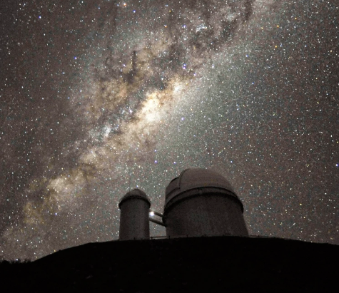
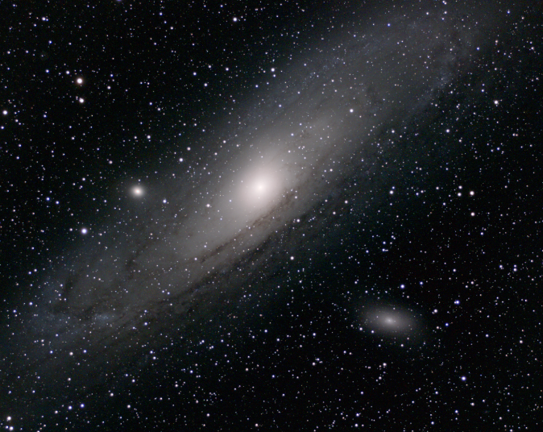
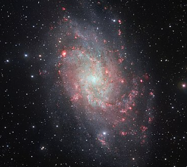
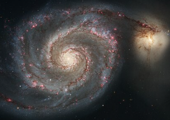
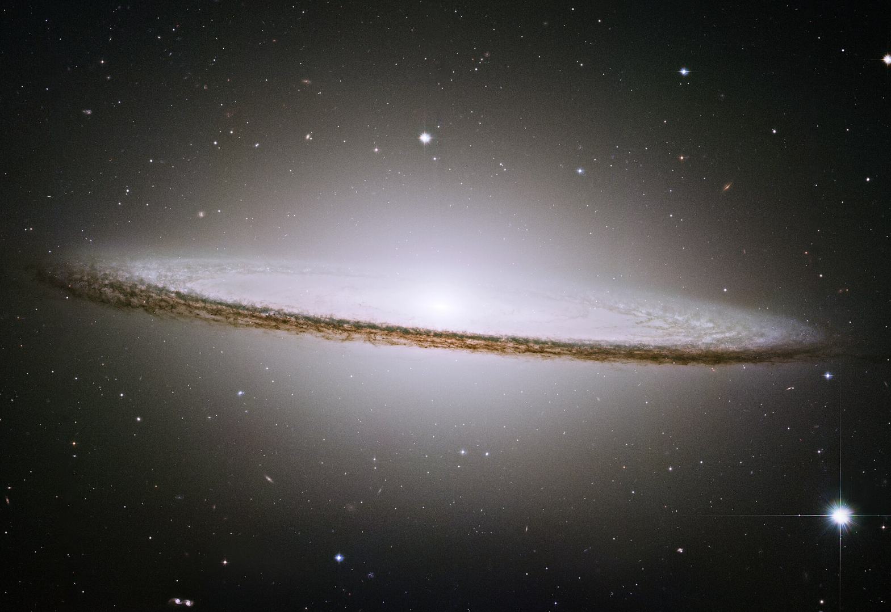
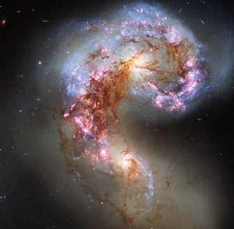
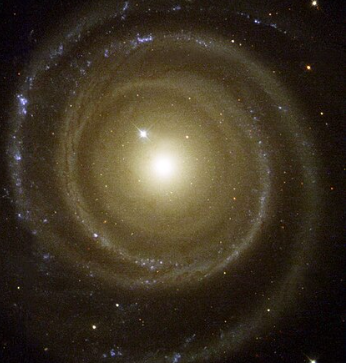
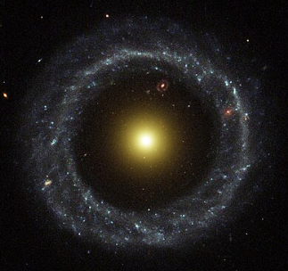

Galaxies:
| Name: | Distance from us: | Apparent Magnitude*: | Type: | (Officially) Discovered by: | Fun Fact: |
|---|---|---|---|---|---|
| Milky Way Galaxy  |
26,000 light-years (to the center) | at least 5.1 | Barred spiral galaxy | Galileo Galilei, 1610 | The center of the Milky Way contains a supermassive black hole, named Sagitarius A*. |
| Andromeda Galaxy  |
2.5 million light-years | 3.4 | Spiral galaxy | Abd al-rahman al-Sufi, 965 CE | This galaxy is the closest galaxy to ours, and will collide with us in about 4.5 billion years. |
| Triangulum Galaxy  |
2.73 million light-years | 6.6 | Spiral galaxy | Giovanni Battista Hodierna, before 1654 | It is believed that this galaxy once interacted/is interacting with Andromeda Galaxy, due to its velocity and close proximity. |
| Whirlpool Galaxy  |
23.5 million light-years | 8.4 | Spiral galaxy | Charles Messier, 1773 | This galaxy can be seen interacting with another smaller galaxy, NGC 5195 (view the bright blob on the top right of the image). |
| Sombrero Galaxy  |
31.1 million light-years | 8.0 | Peculiar galaxy | Pierre Méchain, 1781 | Since we are only able to observe this galaxy nearly edge-on, the galaxy appears to us in the vague shape of a sombrero, giving it its name. |
| Antennae Galaxies (C 61, C 60)  |
45 million light-years | 11.08, 10.88 | Two interacting spiral galaxies | William Herschel, 1785 | The Antennae are two interacting galaxies that have two prominent streams of gas and dust that resemble antennae, and are actively merging to form one supergiant galaxy. This galaxy is an example of the fate of our galaxy once it collides with the Andromeda Galaxy. |
| Backward galaxy  |
111 million light-years | 12.6 | Spiral galaxy | Team of scientists from UA and BSCC, 2001 | The name of this galaxy was given as it appears to be spinning counterclockwise, which is the opposite of how most galaxies spin. Scientists suspect that this is because the galaxy once interacted with another galaxy and changed its rotation. |
| Hoag's Object  |
612.8 million light-years | 15.10 | Ring galaxy | Arthur Hoag, 1950 | Although ring galaxies, such as this one, are a very rare formation, another ring galaxy can be seen within this galaxy (red dot above the nucleus, slightly right, within the outer ring). |